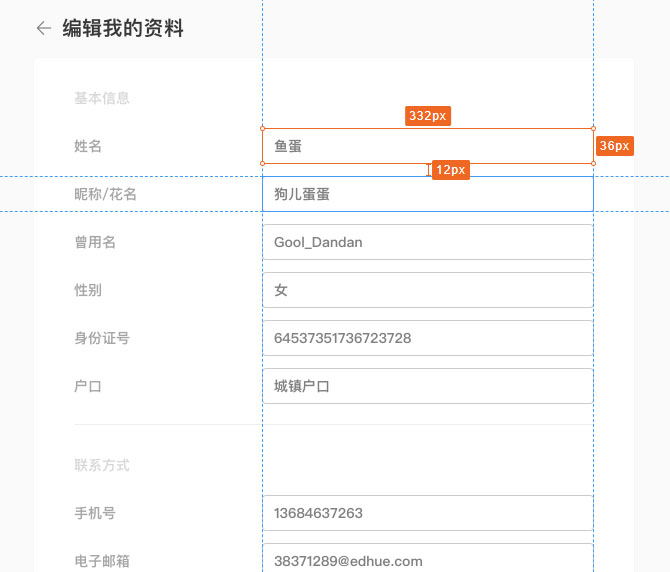
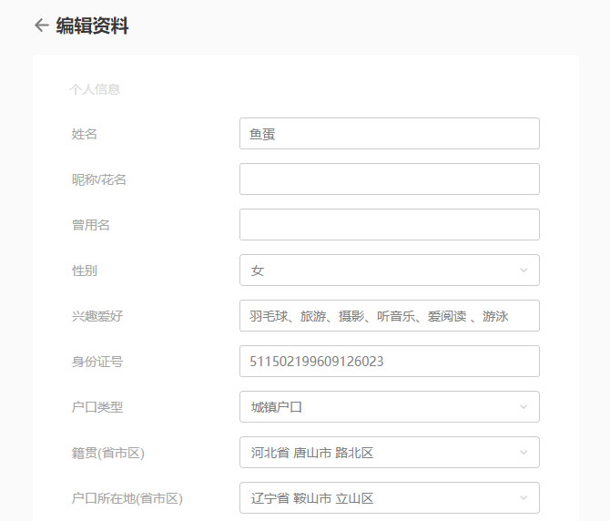
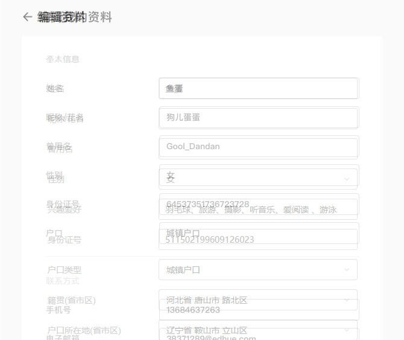

设计图耗费了设计师的心血和脑细胞。在还原设计图时，应尽量地与设计图的标注保持一致，包括内容宽高、字体大小、颜色、边框等，这是设计师经过仔细斟酌后得出来的成果，前端应该去完好地实现它。只有完成这些，才能做一个合格的前端，才能更好地实现人生理想。
在前端样式实现中，我们首先采用了 Normalize 对浏览器的默认样式进行重置，为我们解决了浏览器大部分样式问题，可以更好地书写 css。但在写一些标签的 css 样式时，仍要考虑浏览器默认样式的影响。
例如，table 内单元格书写的宽高与实际的宽高。
以下是我在项目中碰到的一个坑：
 像素经过重叠后：
在行内元素没有撑开行高的情况下，每一行占用的位置不是 48px，而是比 48px 多一点的。
这是由于浏览器的表格单元格之间默认带了一圈 border-spacing 属性，默认是 2px 的大小。Normalize 默认情况并没有清除这个分格线，造成了每个单元格书写的高度与设计图的高度不一致，影响了页面最终的展示。
在实际应用中，一些表单和列表可能会用到 table 标签，在对每一行和每个单元格设置尺寸的时候需要注意。
假如设计中给了一个按钮的正常状态和 hover 状态，以下是两种实现效果：
设计稿标注是不触及过渡动画的，就算一个元素拥有不同的状态前端也只需要把状态都实现就行。but！这样的实现是没有灵魂的。前端可以在实现标注尺寸后给一些元素加上属性过渡。过渡动画的好处：
添加交互的过渡时间，可以让元素动画比较自然，更让人感觉舒适，页面也会更加地有趣，不会让用户在浏览页面时感到呆滞刻板无趣，用户操作时能感受到产品的魅力。甚至有那么点羡慕前端，憧憬着加入前端大部队。
所以，在页面中适当地添加一些元素过渡时间，会让前端更加美好。
在一些用户常访问的网页和高频交互的元素中，动画需要尽可能地快速反馈，transition 的时间要尽可能地短。例如百度、Google 搜索页面的按钮和链接等，其中的大部分元素在划过和按下时属性的改变几乎是瞬间的。因为这些页面用户每天都要高频地打开，用户是存在视觉疲劳的，过多地使用交互动画会让人厌烦。我认为交互动画应该是去引导而不是阻碍，应该在操作中传达必要的反馈而不是去干扰用户思考。
在有些情况，设计师需要我们实现一些复杂的动画，例如开场动画，这些动画拥有持续播放、不需要用户操作的特点，用 css 动画和 js 来还原设计稿做出优雅漂亮的动画比较麻烦，而有时候设计师拉的动画曲线具有无法描述只能感知的特点会让前端工程师在实现的时候没脾气。
作为网页动画实现的爱好者，向大家分享一款将动画实现直接放到网页中的插件，Lottie。
Lottie 是 Airbnb 的面向 iOS、Android、React Native 动画库。它能将某设计软件（AE）导出的 json 文件解析成动画，在相应平台上实现 AE 中的效果。在前端开发中，引入 lottie-web 库可将动画实现效果显示在 web 上。
使用 Bodymovin 插件将 AE 实现好的动画输出成 json 文件，json 文件中包含记录了每一个元件的状态及他们的变化情况。最终网页引入 json 文件，动画根据该文件描述来执行。
AE 动画 -> json 文件 -> 网页动画